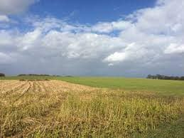
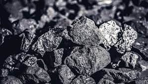
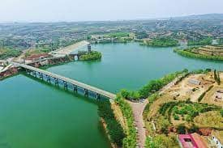
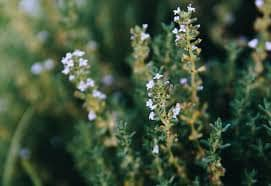

自然资源
- 
-
全区土地总面积为131814.43公顷，耕地面积48518.23公顷，榆次区（2010～2020）建设用地规划指标4250亩。
-
根据《晋中市榆次区耕地后备资源调查》的分析结果：榆次区易开发利用的土地后备资源为12165.96公顷，耕地后备资源为2678.94公顷
-

-
境内已探明的矿产资源有煤、耐火粘土、砖瓦粘土、建筑用砂石等11种。
-
煤分布于区境北山地区的石炭系、二迭系地层之中，埋藏深度在45～150m之间，分布面积54.3平方千米，煤层总数8层，可采煤层为5层，可采煤层总厚度为9m。各煤层地质总储量7.17亿吨。
-
耐火粘土集中产于北山地区的中西部河口沟、崇窑沟、峪口沟一带，赋存于石炭系地层之中，含矿层有6层，主要可开采层有4层，分布于太原组下部，总厚度为25m左右。该粘土据工业分类，主要是软质——半软质耐火粘土。初步调查，地质储量2950万吨。
-
建筑用砂、砾石主要产地有小峪口、鸣李、东赵、郭村、南合流、北后沟6处，赋存于上更新统——现代冲洪积层。分属于境内黑河、涧河、潇河、涂河水系，其中粗、中、细、砾石均有较丰富的资源储藏。
- 
- 境内多年平均水资源总量为9043万立方米。
- 其中河川径流（地表水资源）量2512万立方米。
- 地下水资源量8168万立方米。
- 河川径流与地下水之间重复计算量为1637万立方米。
-
按2006年统计，人均水资源占有量162立方米，耕地亩均占有量129立方米。
- 
-
境内植物种类齐全，林木、果木、药材、花卉、藻类、菌类皆备，共有116科、892种，其中野生植物747种。
- 具有植物资源丰富、植物起源古老、单种属植物较多等特点。
-
动物种类计有陆栖脊椎动物27目231种，其中鸟类172种、哺乳类42种、爬行类12种、两栖类5种。